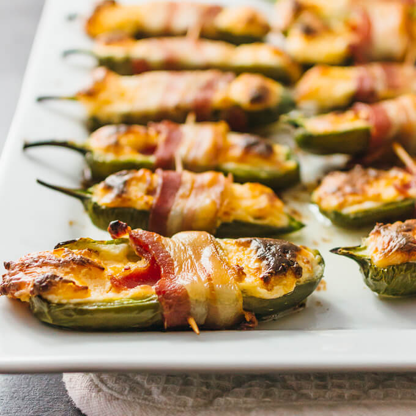

Stuffed jalapeno's

Like part of the title for recipe stuffed is how i feel after these cause i tend to go for to many
A word of advice for those who aren't a fan of heat make sure to get all the seeds out of the peppers cause you will notice if you dont
Ingredients
- 1 cup(8 ounces) cream cheese, softened
- 1 cup grated pepper jack cheese
- 1 teaspoon chili powder
- 1/2 teaspoon cayenne pepper
- 2 shallots, minced
- 10 straight, similarly sized jalapenos halved lengthwise and seeded
- 20 cocktail sausages
- 20 bacon slices(about 2 packs